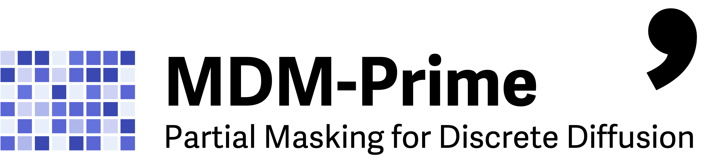
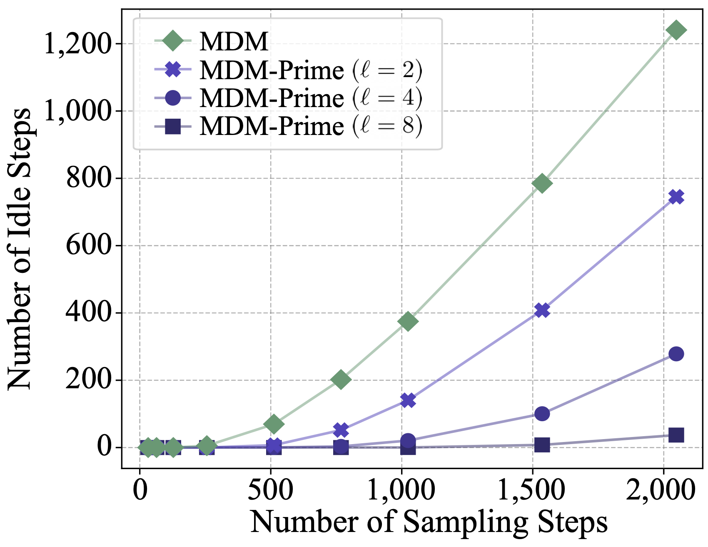
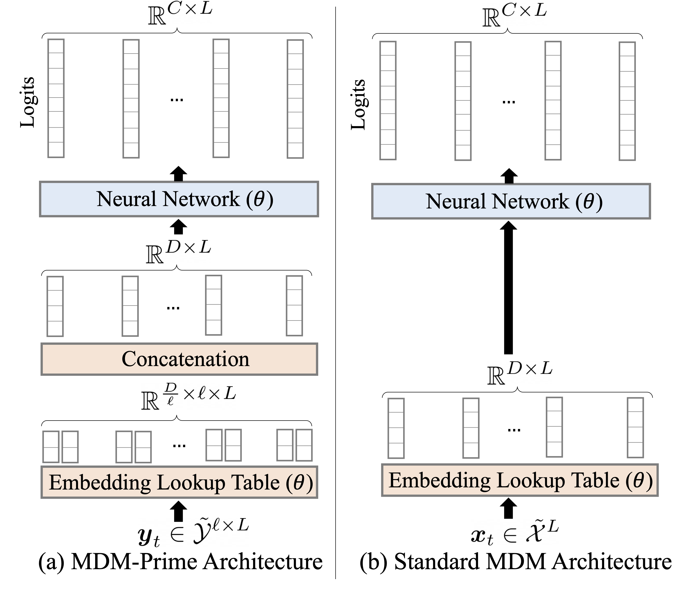
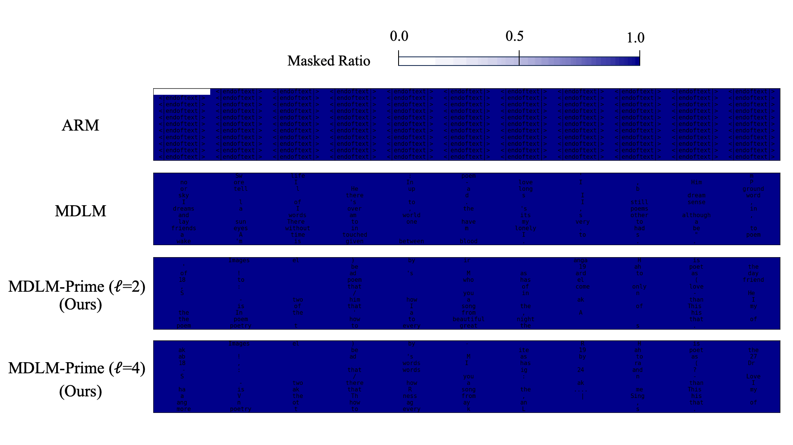
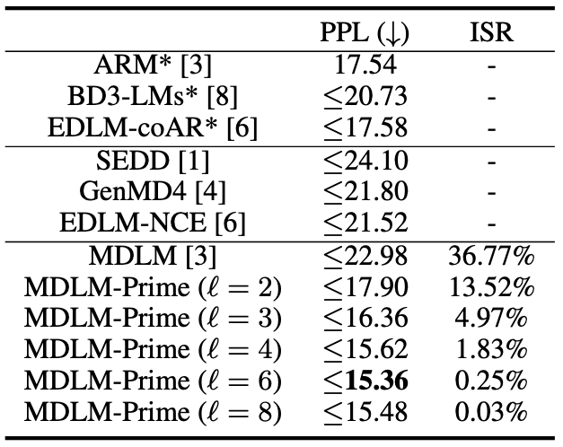
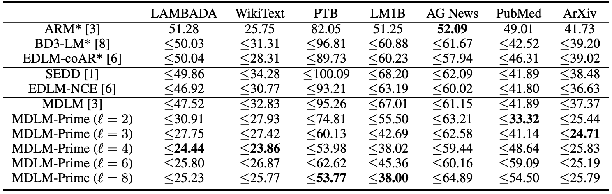
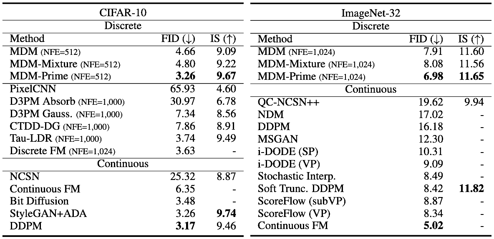

Beyond Masked and Unmasked:
Discrete Diffusion Models via Partial Masking
TL;DR
The work proposes MDM-Prime, an enhanced masked diffusion model (MDM) incorporating a Partial masking scheme (Prime) that introduces intermediate token states between masked and unmasked representations. By enabling a fine-grained denoising process and improving model utilization, MDM-Prime achieves superior performance on both text (perplexity 15.36 on OpenWebText) and image generation (FID 3.26 on CIFAR-10; 6.98 on ImageNet-32), outperforming prior MDM and autoregressive models.

Introduction
The study of discrete data generation has been largely shaped by autoregressive models (ARM), which capture the distribution of sequence data by factorizing it according to a prespecified left-to-right order. Recently, promising results from [1,2] have demonstrated that order-agnostic models, such as masked diffusion models (MDM) (e.g., [1-4]), can be effectively extended to large-scale generation tasks, opening a new venue for discrete generative modeling.
Figure 1. An illustrative example of (a) MDM and (b) MDM-Prime. Each token and its corresponding sub-token sequence (constructed via base-$b$ encoding) can take one of three states: unmasked, masked, or intermediate. This example contains $C = 4$ possible token classes, labeled as `bird’, `cat’, `dog’, and `frog’. $\ell = 2$ indicates that each token is represented using two sub-tokens, and $b = \sqrt[\ell]{C} = 2$ denotes the number of classes per sub-token. The symbol $\texttt{m}$ represents a masked token or a masked sub-token. The bottom-right sections of (a) and (b) illustrate the state transition trees. MDM-Prime supports transitions through intermediate states while retaining the ability to directly reach unmasked states. The bottom-left portions depict the sampling process for a token sequence of length $L = 4$.
▶ Inefficiency of MDM: MDM are latent-variable generative models that introduce noise by progressively masking tokens within a sequence over time. During the reverse diffusion process, masked tokens are incrementally unmasked according to a predefined ratio. Each token takes one of two states, masked or unmasked. This binary representation introduces an inefficiency; the entire sequence often remains unchanged across consecutive sampling steps, causing the model to repeatedly process the same input. This phenomenon is illustrated in the green curve in Fig. 2, which quantifies the number of such idle steps by simulating the reverse diffusion process of an MDM [3]. The figure shows that 37% of the 1,024 steps produce no update to the sequence during the reverse diffusion process. This inefficiency motivates our investigation of redefining the diffusion process to transform these idle steps into informative updates for improving the utilization of the model during generation.
▶ Prime as A Solution: We propose a simple yet effective solution that allows each token to take an intermediate state, which represents the
 Figure 2. Number of idle steps during the reverse diffusion processes of MDM and MDM-Prime. The results are averaged over ten runs. $\ell$ is the sub-token sequence length.
interpolation between the masked and unmasked states, in the diffusion process. We refer to this method as the Partial masking scheme (Prime), and denote MDM augmented with Prime as MDM-Prime. Prime represents each token as a sequence of sub-tokens using a base-$b$ encoding, with masking performed at the sub-token level. Since sub-tokens can be masked independently during the forward diffusion process, this method introduces intermediate states that partially reveal token information. An illustrative example is shown in the top of Fig. 1, where unmasked states `0-3' are first encoded as `00-11', and the intermediate states are obtained by masking one of the sub-tokens in the sub-token sequence. The intermediate states enable MDM-Prime to perform a fine-grained denoising process. For example, as illustrated in the `State Transition Tree' of Fig. 1 (b), a four-choice prediction can be decomposed into two binary decisions during the sampling process (e.g., $\texttt{mm} \to \texttt{m}1 \to 11$). Compared to standard MDM transitions (i.e., Fig. 1 (a)), MDM-Prime is capable of making predictions based on partially observed token information while deferring the final token revelation until later sampling steps. With its ability to transition through intermediate states, MDM-Prime demonstrates improved model utilization during sampling, as reflected in the reduced number of idle steps in Fig. 2 (i.e., the purple curves). This in turn leads to enhanced performance, as later presented in the experiment section. The contributions of this work are as follows:
- (Objective) We propose MDM-Prime, a generalized MDM framework that enables intermediate token transitions. This framework can be optimized through a variational upper bound, which approximates the negative log-likelihood.
- (Architecture) We present a simple implementation of MDM-Prime built upon the standard MDM architecture. Our design requires only minor modifications to the input embedding layer of the standard MDM.
- (Performance) We demonstrate that MDM-Prime achieves superior performance on both image and text generation tasks. On OpenWebText (OWT), MDM-Prime attains an evaluation perplexity of 15.36, outperforming ARM (17.54), MDM (21.52), and their hybrid variants (17.58). To the best of our knowledge, this is the first MDM-based approach to surpass ARM without relying on the autoregressive formulation. Furthermore, MDM-Prime achieves FID scores of 3.26 on CIFAR-10 and 6.98 on ImageNet-32, showing competitive performance comparable to leading continuous generative modeling methods.
Background
This section provides background on the forward and reverse processes of MDM.
 Figure 3. An illustrative example of the forward and reverse masked diffusion processes.
Figure 3. An illustrative example of the forward and reverse masked diffusion processes.
▶ Notations:
| Symbol | Description | Symbol | Description |
|---|---|---|---|
| $L$ | token sequence length | $C$ | number of classes a token can take |
| $\XX$ | a set of tokens: $\{0,\cdots,C-1\}$ | $\tilde{\XX}$ | an augmented set of tokens: $\XX \cup \{\texttt{m}\}$ |
| $\vx_0$ | a sequence of tokens ($\vx_0\in \XX^L$) | $\vx_t$ | a sequence of noised tokens ($\vx_t \in \tilde{\XX}^L$) |
| $\delta_{x'}(x)$ | the Kronecker delta function (equals $1$ only if $x = x'$) | $t,s$ | continuous time variables ($t,s\in [0,1]$) |
Foward Diffusion Process
The forward diffusion process is performed through an element-wise conditional sampler $q(\vx_{t}|\vx_0)=\prod_{i=1}^L q(x_{t}^i|x^i_0)$ constructed by interpolating between $\delta_{\texttt{m}}(\cdot)$ and $\delta_{x_0^i}(\cdot)$, defined as follows: [3,4]
$$ \begin{equation} \label{eq:kernel_t0} q(x^i_{t}|x^i_0)= (1-\alpha_t)\delta_{\texttt{m}} (x^i_{t})+\alpha_t \delta_{x^i_0}(x^i_{t}), \end{equation} $$
where $\alpha_t \in [0,1]$ is a strictly decreasing scheduling function with boundary conditions $\alpha_0 \approx 1$ and $\alpha_1 \approx 0$. Intuitively, each perturbed token $x_t^i$ retains the original value $x_0^i$ with probability $\alpha_t$, and is replaced by $\texttt{m}$ with probability $1-\alpha_t$. At time $t=1$, the latent variable $\vx_1=[\texttt{m},\cdots,\texttt{m}]$ consists entirely of masked tokens. An illustrative example of this process is shown in Fig. 3.
Reverse Diffusion Process
Let $s$ and $t$ be two time variables that satisfy $0 \leq s < t \leq 1$. The reverse diffusion process is performed by iterating through $p(\vx_{s}|\vx_t)$, starting from $\vx_1$. The distribution $p(\vx_{s}|\vx_t)$ can be derived using $q(\vx_{t}|\vx_{s})$ and $q(\vx_{s}|\vx_{t},\vx_{0})$. In particular, $q(\vx_{t}|\vx_{s})=\prod_{i=1}^L q(x_{t}^i|x^i_s)$ is defined to be absorbing [5] on the masked state, and is derived from Eq. (\ref{eq:kernel_t0}) as follows:
$$ \begin{equation} \label{eq:kernel_ts} \begin{aligned} q(x^i_t|x^i_{s})=\begin{cases} \frac{\alpha_{s}-\alpha_t}{\alpha_{s}} \delta_{\texttt{m}}(x^i_{t})+\frac{\alpha_t}{\alpha_{s}}\delta_{x^i_{s}}(x^i_{t})& \text{if }x^i_s \in \XX,\\ \delta_{x^i_s}(x^i_{t}) & \text{if } x^i_s = \texttt{m}. \end{cases} \end{aligned} \end{equation} $$
Based on Eqs. (\ref{eq:kernel_t0}) and (\ref{eq:kernel_ts}), the posterior distribution $q(\vx_{s}|\vx_{t},\vx_{0})=\prod_{i=1}^L q(x^i_{s}|x^i_{t},x^i_{0})$ can be derived using Bayes’ rule, and is expressed as [3,4]:
$$ \begin{equation} \label{eq:kernel_ts0} \begin{aligned} q(x^i_{s}|x^i_{t},x^i_{0})= \begin{cases} \delta_{x^i_t}(x^i_{s}) & \text{if } x^i_t \in \XX,\\ \frac{1-\alpha_{s}}{1-\alpha_t}\delta_{\texttt{m}}(x^i_{s})+\frac{\alpha_{s}-\alpha_{t}}{1-\alpha_t} \delta_{x^i_0}(x^i_{s})& \text{if }x^i_t = \texttt{m}. \end{cases} \end{aligned} \end{equation} $$
Since $p(\vx_{s}|\vx_t)=\EE_{p(\vx_0|\vx_t)}[q(\vx_{s}|\vx_{t},\vx_{0})]$ [5], many recent works [2-4] choose to model $p(\vx_0|\vx_t)$ using $p_\theta(\vx_0|\vx_t)$, where $\theta$ denotes the model parameters. To facilitate computational efficiency, this distribution is typically factorized as $p_\theta(\vx_0|\vx_t)=\prod_{i=1}^L p_\theta (x_0^i|\vx_t)$ [1-7]. The parameter $\theta$ can be optimized by estimating the negative log-likelihood $-\log p_\theta(\vx_0)$ using a variational upper bound, written as [3,4]:
$$ \begin{equation} \label{eq:diffusion_elbo} \begin{aligned} \mathcal{L}_\text{vb}(\vx_0;\theta)=\int_0^1 \frac{\alpha'_t}{1-\alpha_t} \mathbb{E}_{q(\vx_t|\vx_0)}\left[\sum_{i=1}^L \log p_\theta (x_0^i|\vx_t) \right] dt, \end{aligned} \end{equation} $$
where $\alpha_t'=\frac{d}{dt} \alpha_t$. Since unmasked elements in $\vx_t$ retain their values over time according to Eq. (\ref{eq:kernel_ts0}), the carry-over parameterization [3,4] can be applied by explicitly setting the corresponding entries in $\vx_0$ to the unmasked values in $\vx_t$. Formally, this is expressed as $p_\theta(x_0^i | \vx_t) \triangleq \delta_{x_t^i}(x_0^i)$ for position $i$ where $x_t^i \in \XX$.
Methodology
We introduce a new MDM framework that incorporates Prime, referred to as MDM-Prime. We begin by introducing an invertible function for constructing sub-token sequences and define a novel masked diffusion process over these sub-tokens. We then describe a novel parameterization and a simple model architecture design that operate over sub-token inputs.
Figure 4. An illustrative example of the training process of MDM-Prime. In this example, $L=4$ and $\ell=2$.
▶ Notations:
| Symbol | Description | Symbol | Description |
|---|---|---|---|
| $\ell$ | sub-token sequence length | $b$ | number of classes a sub-token can take ($b = \sqrt[\ell]{C}$) |
| $\YY$ | a set of sub-tokens: $\{0,\cdots,b-1\}$ | $\tilde{\YY}$ | an augmented set of sub-tokens: $\YY \cup \{\texttt{m}\}$ |
| $\vy_0$ | a sequence of sub-tokens ($\vy_0 \in \YY^{L \times \ell}$) | $\vy_t$ | a sequence of noised sub-tokens ($\vy_t \in \tilde{\YY}^{L \times \ell}$) |
Discrete Diffusion via Partial Masking
The core idea of Prime is to represent each token $x^i_0$ with a sub-token sequence $\vy^i_0=[y^{i,1}_0,\cdots,y^{i,\ell}_0]$, allowing the creation of intermediate states during the element-wise masking of the forward diffusion process (see Fig. 4). Given a target length $\ell>1$, this can be achieved through the use of an invertible function $f$, which maps each token $x^i_0 \in \XX$ to its base-$b$ encoding $\vy^i_0 \in \YY^\ell$.
To learn $p_\theta(\vy_0)$ using MDM, each data point $\vx_0$ is first transformed into $\vy_0 = f(\vx_0)$, and its corresponding latent variable $\vy_t$ is sampled from $q(\vy_{t}|\vy_0)=\prod_{i=1}^L\prod_{j=1}^{\ell} q(y_{t}^{i,j}|y^{i,j}_0)$ according to Eq. (\ref{eq:kernel_t0}) by substituting $x$'s with $y$'s. The reverse diffusion process is parameterized by $p_\theta(\vy_0 | \vy_t)=\prod_{i=1}^L p_\theta(\vy_0^i| \vy_t)$, and the model is trained to minimize the loss $\mathcal{L}_{\text{vb}}(\vy_0; \theta)$ as in Eq. (\ref{eq:diffusion_elbo}):
$$ \begin{equation} \label{eq:prime_elbo} \begin{aligned} \mathcal{L}_\text{vb}(\vy_0;\theta)=\int_0^1 \frac{\alpha'_t}{1-\alpha_t} \mathbb{E}_{q(\vy_t|\vy_0)}\left[\sum_{i=1}^{L} \log p_\theta(\vy^{i}_0|\vy_{t}) \right] dt. \end{aligned} \end{equation} $$
Our paper shows that Eq. (\ref{eq:prime_elbo}) defines a variational bound that approximates negative log-likelihood (NLL), and that the number of idle steps decreases as $\ell$ increases, which guarantees an improved model utilization of MDM-Prime during the reverse diffusion process.
Parameterization
This section discusses our implementation for $p_\theta(\vy^{i}_0|\vy_{t})$, which comprises a decoder for modeling the distribution of $\vy^{i}_0$ and an encoder for processing the input $\vy_{t}$.
▶ Decoder Design via Joint Probability: A straightforward approach to implementing $p_\theta(\vy^{i}_0|\vy_{t})$ is to factorize it as $\prod_{j=1}^{\ell} p_\theta(y^{i,j}_0|\vy_{t})$, modeling each component with a softmax distribution. While this factorization allows for easy application of the carry-over parameterization, it introduces two key challenges: an independence assumption and potential generation of invalid samples. To address these issues, we propose to model the joint distributions $p_\theta(\vy^{i}_0|\vy_t)$ of a sequence of $\ell$ sub-tokens while explicitly zeroing out the probability mass assigned to invalid samples. This is achieved by parameterizing only the logits of base-$b$ encoding $\vy^i_0\in f(\XX)$ that correspond to a valid $x_0^i\in \XX$, which results in $C$ entries in the logits for $i\in\{1,\cdots,L\}$.
Based on the above joint probability design, to further support the carry-over parameterization for MDM-Prime, the element-wise distribution should be defined as $p_\theta(y^{i,j}_0|\vy_t) \triangleq \delta_{y^{i,j}_t}(y^{i,j}_0)$ for all position $i,j$ where $y^{i,j}_t \in \YY$. Since we parameterize the joint distribution as $p_\theta(\vy^{i}_0|\vy_t)=p_\theta(y^{i,1}_0,\cdots,y^{i,\ell}_0|\vy_{t})$, this condition is imposed on the marginal distribution as follows:
$$ \begin{equation} \label{eq:marginalization} \begin{aligned} p_\theta(y^{i,j}_0|\vy_{t})=\sum_{y_0^{i,1},\,\cdots,\,y_0^{i,j-1},\,y_0^{i,j+1},\,\cdots,\,y_0^{i,\ell}\in \YY} p_\theta(y^{i,1}_0,\cdots,y^{i,\ell}_0|\vy_{t}) \triangleq \delta_{y^{i,j}_t}(y^{i,j}_0). \end{aligned} \end{equation} $$
To meet this condition, the probabilities of $\vy_0^i$ with any element $y_0^{i,j}$ that is inconsistent with $y_t^{i,j}$ should be explicitly set to zero. The parameterized probability can thus be defined as follows:
Figure 5. An illustration of the proposed carry-over parameterization. Softmax distributions $p_\theta (\vy_0^i |\vy_t)$ (i.e., Eq. (\ref{eq:parameterization})) are formed by normalizing the corresponding logits highlighted in yellow. In this example, $C = 7$, $\ell = 3$, and $b = 2$.
$$ \begin{equation} \label{eq:parameterization} \begin{aligned} p_\theta(\vy^{i}_0|\vy_{t})= \begin{cases} \frac{\exp (E_\theta (\vy_0^i|\vy_t))}{ \sum_{\vy^i\in \VV(\vy_t^i)} \exp (E_\theta (\vy^i|\vy_t)) },& \text{if $\vy^{i}_0\in \VV(\vy_t^i)$},\\ 0,& \text{if $\vy^{i}_0\notin \VV(\vy_t^i)$}, \end{cases} \end{aligned} \end{equation} $$
where $\VV(\vy_t^i)\triangleq \{ \vy^i=[y^{i,1}, \cdots, y^{i,\ell}] \in f(\XX) \,\,\,s.t.\,\,\, (y^{i,j} = y^{i,j}_t) \vee (y^{i,j}_t = \texttt{m})\}$ denotes a set of outputs that is consistent with $y_t^{i,j}$, and $E_\theta:\YY^{\ell}\times \tilde{\YY}^{\ell\times L}\to \RR$ is a scalar logit. Proposition A.4 in our paper guarantees that Eq. (\ref{eq:parameterization}) satisfies Eq. (\ref{eq:marginalization}). An illustrative example is provided in Fig. 5. As the reverse diffusion process progresses, the number of unmasked sub-tokens in $\vy_t^i$ increases, leading to a substantial reduction in $|\VV(\vy_t^i)|$. This results in a decreasing number of candidate classes of $\vy^i_0$ over time, and thus explicitly reducing uncertainty in the prediction task.
▶ Encoder Design for Processing Sub-tokens: In contrast to the decoder, where the distribution over sub-tokens $\vy^i_0 \in f(\XX)$ is represented jointly using logit outputs with $C$ entries (see Fig. 5), the encoder receives noised inputs $\vy_t^i$ that lie in the augmented set $\tilde{\YY}^\ell$. Since $|\tilde{\YY}^\ell|$ may grow with $\ell$ and typically exhibits $|\tilde{\YY}^\ell| \gg C$, creating an embedding lookup table for $\vy_t^i$ is impractical due to the resulting growth in the number of parameters in it. To address this issue, we propose to model each sub-token embedding separately (i.e., creating a lookup table for individual $y_t^{i,j}\in\tilde{\YY}$), followed by a merging operation to produce a token embedding.
In our approach, a simple merging operation based on concatenation is employed. Let $D$ denote the dimensionality of the token embedding vector. Each sub-token is first embedded into a vector of size $D/\ell$, and the resulting $\ell$ embeddings are concatenated to form a $D$-dimensional token embedding vector. This token embedding can then be processed by an arbitrary downstream neural network, which allows us to reuse the standard MDM architecture. A comparison between this design and a standard MDM architecture is shown in Fig. 6.
 Figure 6. Comparison between (a) MDM-Prime and (b) standard MDM architectures. The embedding lookup table in (a) has fewer parameters since $|\tilde{\YY}|< |\tilde{\XX}|$ and $D/\ell< D$.
In summary, adapting a standard MDM to MDM-Prime requires only minimal architectural modifications on the embedding layer. This simple strategy preserves the overall architectural design of the standard MDM, enabling a fair comparison with our baseline in the following experiments.
Experiments
This section presents empirical evaluations to examine the effectiveness of the proposed method.
Text Generation
▶ Configuration: In this set of experiments, models are trained on the OpenWebText (OWT) dataset. The text data are tokenized using the GPT-2 tokenizer, which defines $L = 1,024$ and $C = 50,257$. The Masked Diffusion Language Model (MDLM) [3] is adopted as our baseline, and the experimental setup is consistent with [3]. Prime with different $\ell$ is applied to enhance it, and our method is denoted as MDLM-Prime. We also include comparisons with several recent approaches [1,3,4,6,8].
 Figure 7. Visualization of the sampling processes of ARM, MDLM, and MDLM-Prime. The masked ratio is measured on a per-token basis, with higher values indicated by darker shades of blue. The samples are generated with prefix and suffix texts sourced from an online article describing Rabindranath Tagore’s poems.
▶ Improvements to Likelihood Evaluation: We evaluate the models’ ability to capture the data distribution using the perplexity (PPL) metric. Table 1 reports PPL on OWT, along with the idle step ratio (ISR), which is defined as the proportion of idle steps relative to the total sampling steps. We observe that as $\ell$ increases, MDLM-Prime achieves lower PPL, with performance converging when $\ell \geq 4$. Since ISR also converges when $\ell \geq 4$, this trend suggests that ISR can serve as an indicator of improved likelihood modeling ability. Moreover, MDLM-Prime with $\ell \geq 3$ outperforms ARM, MDM-based approaches [1,3,4,6], and their hybrid variant [6,8] by a noticeable margin in terms of PPL, indicating that incorporating intermediate state representations allows MDLM-Prime to model data likelihood more effectively. Instead of following recent approaches [6,8] that leverage an autoregressive formulation to enhance MDM performance, MDLM-Prime maintains an order-agnostic framework while achieving superior performance on textual data.
 Table 1. Evaluation on OWT. Methods marked with * involve autoregression.
▶ Improvements to Generalizability to Unseen Text Data: With the models trained on OWT, we then examine their generalizability to unseen textual datasets. To assess the models’ generalizability across diverse text domains, we report PPL on a suite of commonly used zero-shot benchmarks, including LAMBADA, WikiText, Penn Treebank (PTB), 1 Billion Word Benchmark (LM1B), AG News, and Scientific Papers (PubMed and ArXiv subsets). The results are reported in Table 2. MDLM-Prime exhibits superior results on LAMBADA, PTB, and ArXiv, and achieves comparable performance to ARM on WikiText. While it underperforms ARM on AG News, the overall results highlight its superior generalizability across multiple domains. Furthermore, the ablation study in Appendix A.5.1 of our paper reveals that the carry-over parameterization plays an important role in enhancing zero-shot performance, offering improvements on both LAMBADA and PubMed.
 Table 2. Zero-shot perplexities evaluated on seven textual datasets. Lower values correspond to better performance. Methods marked with * incorporate an autoregressive formulation. MDLM-Prime exhibits improved results on LAMBADA, PTB, and ArXiv.
Image Generation
▶ Configuration: In this set of experiments, models are trained and evaluated on the CIFAR-10 and ImageNet-32 datasets. For both datasets, the dimensionality is set to $L=32\times 32 \times 3$, with $C = 256$ corresponding to pixel intensity values. The core model architecture is adapted from the ablated diffusion model (ADM) [9], which is the same as that used in [7]. Sample quality is evaluated using the widely adopted Fréchet Inception Distance (FID) and Inception Score (IS) metrics.
 Figure 8. CIFAR-10 samples generated by MDM-Prime with NFE=512.
Figure 8. CIFAR-10 samples generated by MDM-Prime with NFE=512.
▶ Improvements to Sample Quality: The benchmark results are reported in Table 3, which include two baselines, MDM and MDM-Mixture, as well as several existing generative modeling approaches. The MDM baseline corresponds to the standard configuration with $\ell = 1$, while MDM-Mixture extends this baseline by incorporating a mixture distribution using an auxiliary variable, similar to [10]. In this comparison, MDM-Prime adopts $\ell = 2$.
As shown in the tables, MDM and MDM-Mixture are inferior to MDM-Prime. On CIFAR-10, MDM-Prime achieves better results than the other discrete generative models while requiring fewer NFE, and attains performance comparable to StyleGAN+ADA [11]. On ImageNet-32, MDM-Prime demonstrates improved performance over existing continuous diffusion and score-based models, achieving an FID improvement of 1.36 over ScoreFlow (VP) [12].
 Table 3. FID and IS evaluation on CIFAR-10 and ImageNet-32. The arrow symbols $\uparrow$ / $\downarrow$ represent that higher / lower results correspond to better performance.
References
[1] A. Lou, C. Meng, and S. Ermon. Discrete Diffusion Modeling by Estimating the Ratios of the Data Distribution, ICML 2024.
[2] S. Nie, F. Zhu, Z. You, X. Zhang, J. Ou, J. Hu, J. Zhou, Y. Lin, J.-R. Wen, and C. Li. Large Language Diffusion Models, ICML 2025.
[3] S. S. Sahoo, M. Arriola, Y. Schiff, A. Gokaslan, E. Marroquin, J. T Chiu, A. Rush, and V. Kuleshov. Simple and Effective Masked Diffusion Language Models. NeurIPS 2024.
[4] J. Shi, K. Han, Z. Wang, A. Doucet, and M. K. Titsias. Simplified and Generalized Masked Diffusion for Discrete Data. NeurIPS 2024.
[5] J. Austin, D. D. Johnson, J. Ho, D. Tarlow, and R. v. d. Berg. Structured Denoising Diffusion Models in Discrete State-Spaces. NeurIPS 2021.
[6] M. Xu, T. Geffner, K. Kreis, W. Nie, Y. Xu, J. Leskovec, S. Ermon, and A. Vahdat. Energy-Based Diffusion Language Models for Text Generation. ICLR 2025.
[7] I. Gat, T. Remez, N. Shaul, F. Kreuk, R. T. Q. Chen, G. Synnaeve, Y. Adi, and Y. Lipman. Discrete Flow Matching. NeurIPS 2024.
[8] M. Arriola, A. Gokaslan, J. T Chiu, Z. Yang, Z. Qi, J. Han, S. S. Sahoo, and V. Kuleshov. Block Diffusion: Interpolating Between Autoregressive and Diffusion Language Models. ICLR 2025.
[9] P. Dhariwal and A. Nichol. Diffusion Models Beat GANs on Image Synthesis. NeurIPS 2021.
[10] S. Hayakawa, Y. Takida, M. Imaizumi, H. Wakaki, and Y. Mitsufuji. Distillation of Discrete Diffusion through Dimensional Correlations. Machine Learning and Compression Workshop at NeurIPS 2024.
[11] T. Karras, M. Aittala, J. Hellsten, S. Laine, J. Lehtinen, and T. Aila. Training Generative Adversarial Networks with Limited Data. NeurIPS 2020.
[12] Y. Song, C. Durkan, I. Murray, and S. Ermon. Maximum Likelihood Training of Score-Based Diffusion Models. NeurIPS 2021.
[13] W. N. Cottingham and D. A. Greenwood. An Introduction to the Standard Model of Particle Physics. 2007.
BibTeX
@article{chao2025mdmprime,
title={{Beyond Masked and Unmasked: Discrete Diffusion Models via Partial Masking}},
author={Chen-Hao Chao, Wei-Fang Sun, Hanwen Liang, Chun-Yi Lee, Rahul G. Krishnan},
journal={\tt arXiv:2505.18495 [cs.LG]},
year={2025},
}